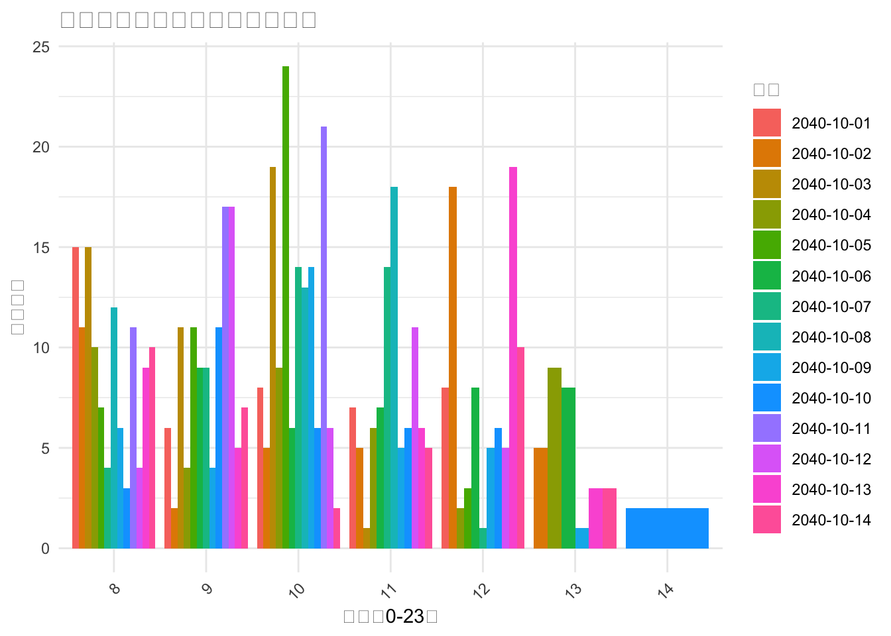
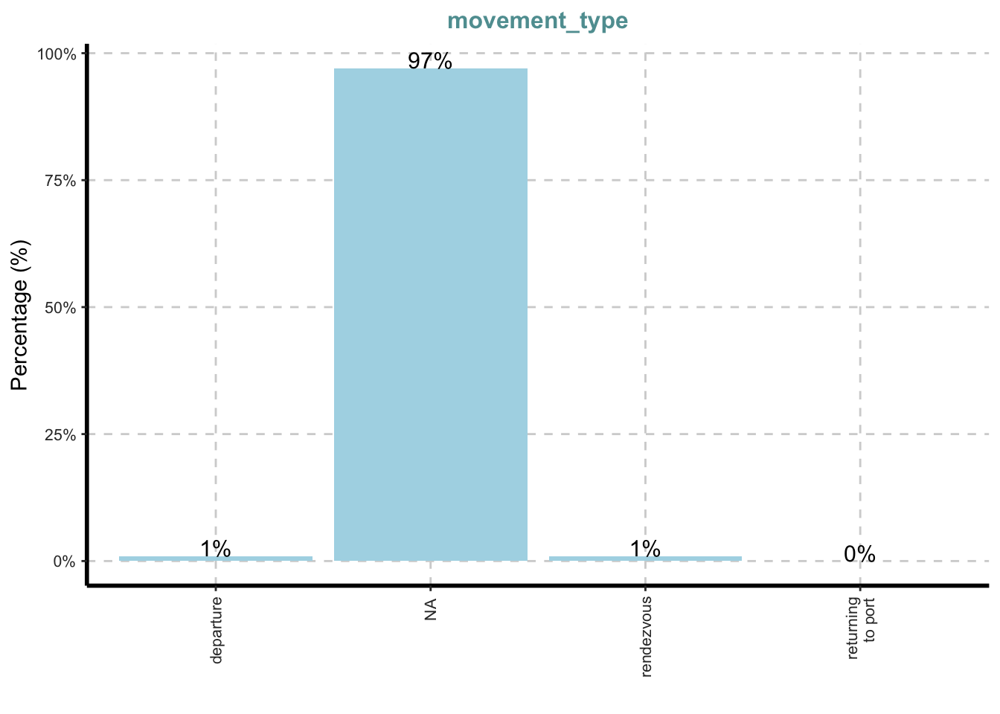
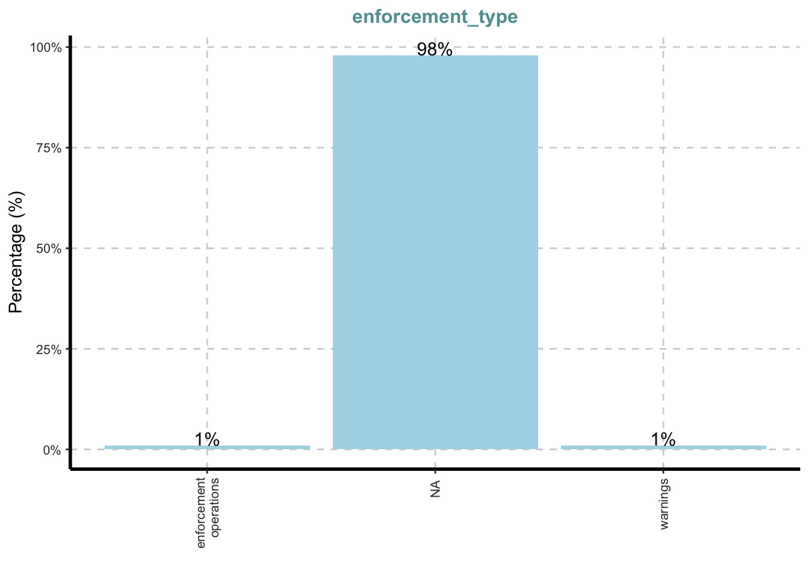
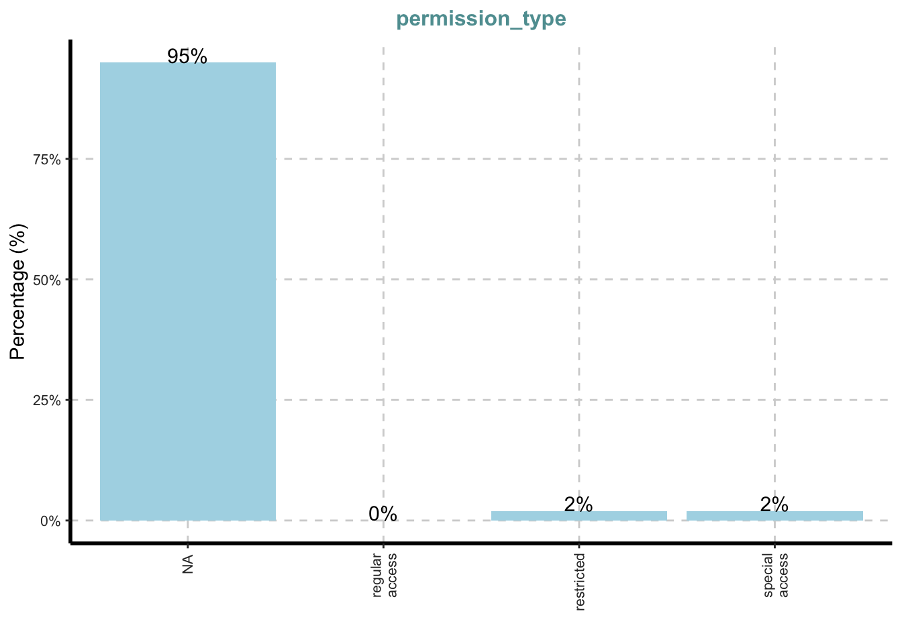
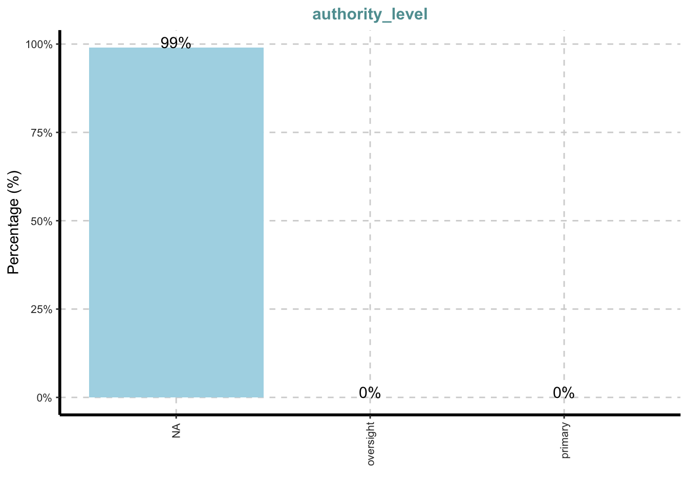
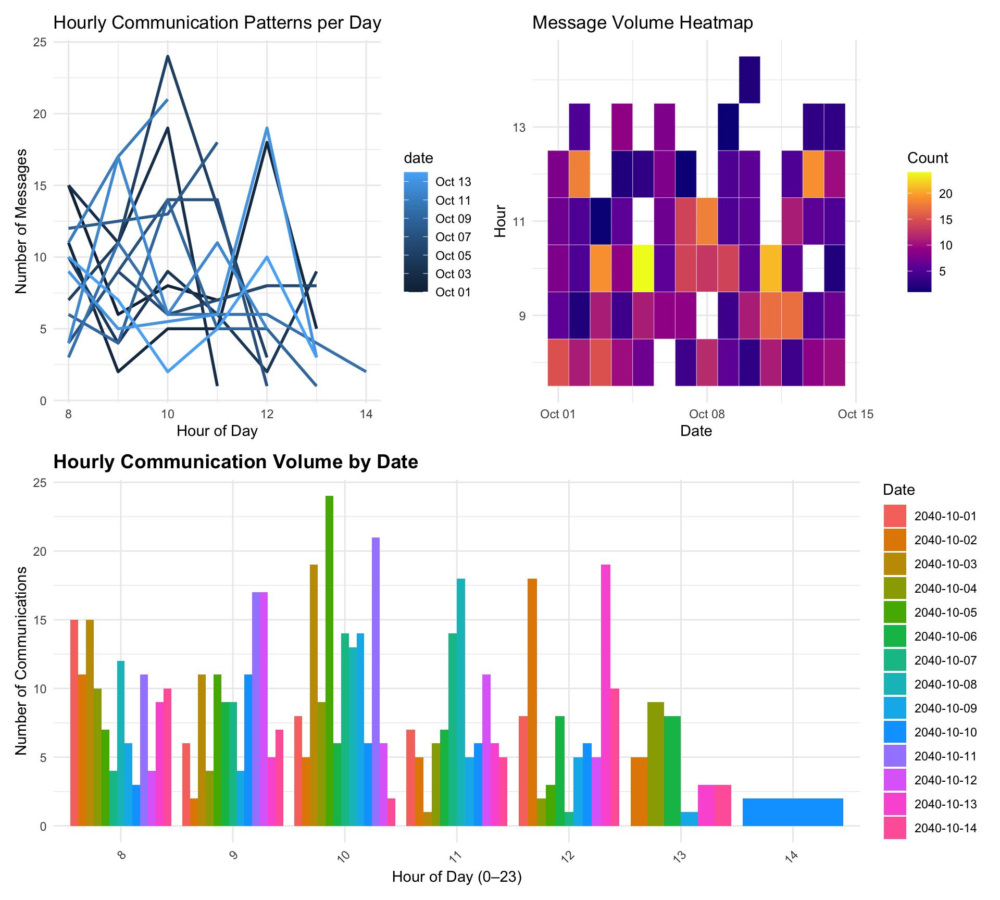
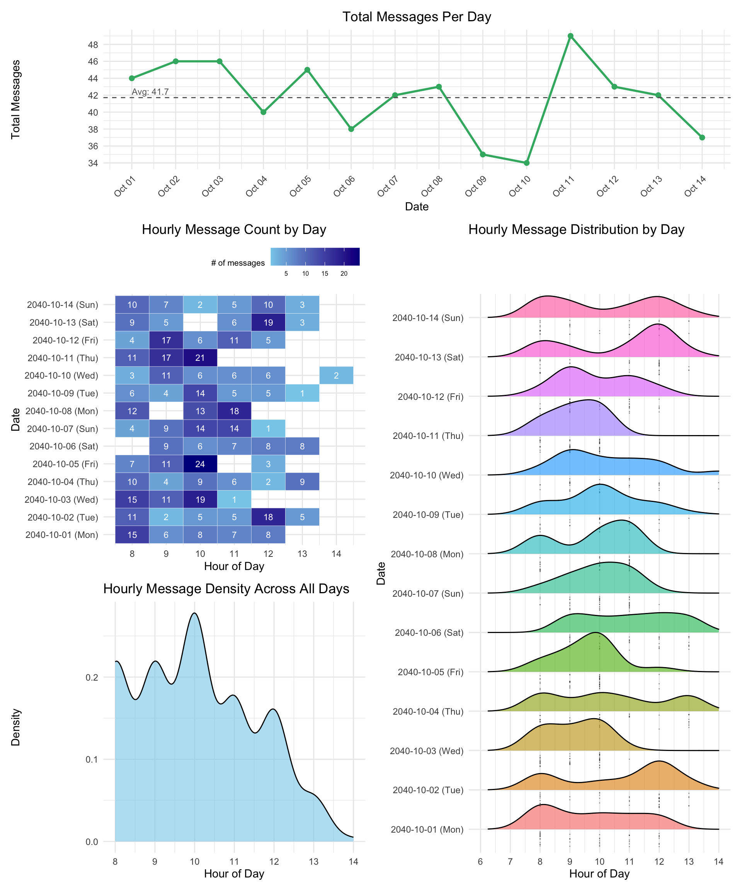
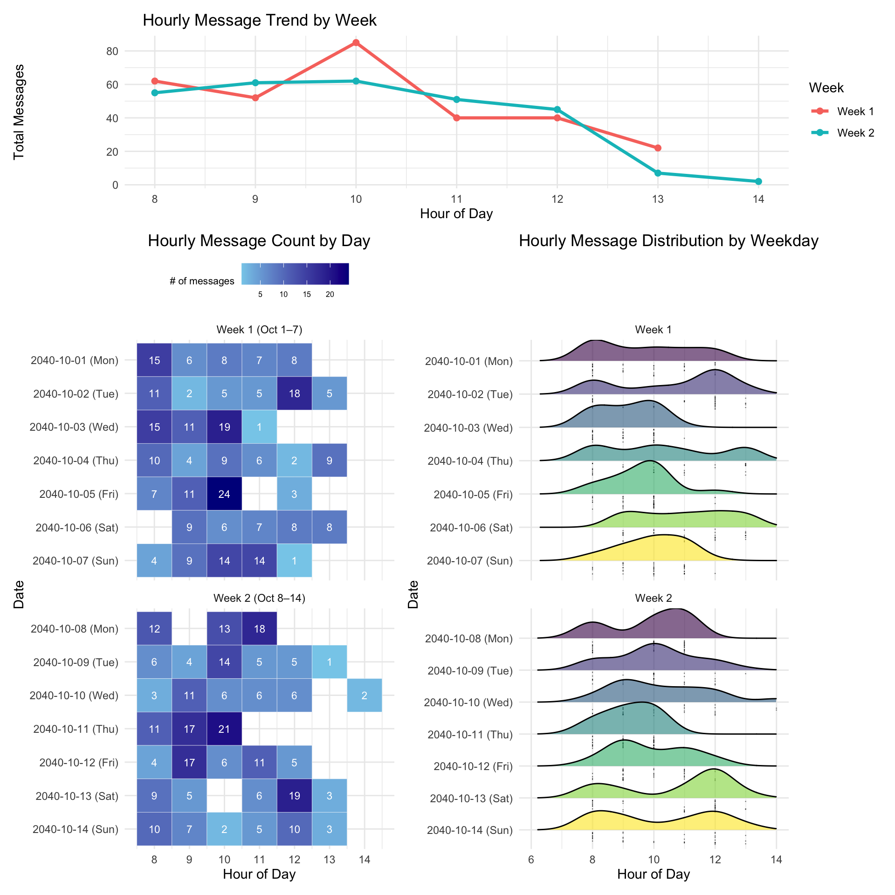

pacman::p_load(
jsonlite,
tidyverse,
lubridate,
patchwork,
ggridges,
ggraph,
tidygraph,
igraph,
dplyr,
ggiraph,
SmartEDA,
visNetwork,
ggiraph
)Take-home Exercise 2
VAST Challenge 2025 Mini-Challenge 3
1 Overview
In this report, I will be tacking Mini-case 3 of VAST Challenge 2025.
1.1 Background
Over the past decade, the Oceanus community has transitioned from its fishing-based roots to more regulated sectors like ocean tourism, following major crackdowns on illegal fishing. This shift has heightened local tensions. Recently, international pop star Sailor Shift announced plans to film a music video on the island, adding to the complexity.
Journalist Clepper Jessen (formerly an analyst at FishEye, now with the Hacklee Herald) has been investigating the temporary closure of Nemo Reef. By analyzing intercepted radio communications and other data, he uncovered a tangled web involving high-ranking officials, Sailor Shift’s team, powerful local families, and the environmental group The Green Guardians, pointing toward corruption and manipulation.
1.2 Tasks and Questions
Clepper diligently recorded all intercepted radio communications over the last two weeks. With the help of his intern, they have analyzed their content to identify important events and relationships between key players. The result is a knowledge graph describing the last two weeks on Oceanus. Clepper and his intern have spent a large amount of time generating this knowledge graph, and they would now like some assistance using it to answer the following questions.
Clepper found that messages frequently came in at around the same time each day.
Develop a graph-based visual analytics approach to identify any daily temporal patterns in communications.
How do these patterns shift over the two weeks of observations?
Focus on a specific entity and use this information to determine who has influence over them.
1.3 The Data
I will use the dataset provided by VAST Challenge.This report utilizes two core datasets: MC3_graph.json, which encodes the knowledge graph of communications, events, and relationships; and MC3_schema.json, which defines the structure, subtypes, and attributes of each node and edge type within the graph.
Node Attributes

Edge Attributes

2 Setup
2.1 Loading Packages
| Library | Purpose |
|---|---|
jsonlite |
An R package for parsing and generating JSON data, enabling smooth data exchange between R and web services or JSON files. |
tidyverse |
Include dplyr for data manipulation (mutate, group_by, summarize), ggplot2 for visualization (histograms, boxplots), and forcats for factor handling and variable ordering. |
lubridate |
An R package to work with dates and times, simplifying parsing, manipulation, and arithmetic of date-time objects. |
patchwork |
An R package for preparing composite figure created using ggplot2. |
ggridges |
An R package for creating density plots for visualisation of continuous distribution. |
ggraph |
An R package extending ggplot2 to visualize graph/network data, supporting layouts like force-directed, circular, and dendrograms. |
tidygraph |
An R package that integrates tidyverse principles into graph/network analysis, allowing tidy manipulation of graph objects. |
igraph |
A core R package for network analysis and visualization, providing tools to create, manipulate, and analyze graph structures. |
dplyr |
Part of the tidyverse; provides fast, consistent functions for data manipulation (filter, select, mutate, summarize, join). |
ggiraph |
An R package to create interactive ggplot-based visualizations with tooltips, hover effects, and JavaScript interactions. |
SmartEDA |
An R package providing automated exploratory data analysis (EDA) tools to quickly summarize and visualize datasets. |
visNetwork |
An R package for interactive network visualization using the vis.js JavaScript library, enabling interactive exploration of graph data. |
2.2 Importing data
MC3 <- fromJSON("data/MC3_graph.json")
MC3_schema <- fromJSON("data/MC3_schema.json")2.3 Data Overview
glimpse(MC3)List of 5
$ directed : logi TRUE
$ multigraph: logi FALSE
$ graph :List of 4
..$ mode : chr "static"
..$ edge_default: Named list()
..$ node_default: Named list()
..$ name : chr "VAST_MC3_Knowledge_Graph"
$ nodes :'data.frame': 1159 obs. of 31 variables:
..$ type : chr [1:1159] "Entity" "Entity" "Entity" "Entity" ...
..$ label : chr [1:1159] "Sam" "Kelly" "Nadia Conti" "Elise" ...
..$ name : chr [1:1159] "Sam" "Kelly" "Nadia Conti" "Elise" ...
..$ sub_type : chr [1:1159] "Person" "Person" "Person" "Person" ...
..$ id : chr [1:1159] "Sam" "Kelly" "Nadia Conti" "Elise" ...
..$ timestamp : chr [1:1159] NA NA NA NA ...
..$ monitoring_type : chr [1:1159] NA NA NA NA ...
..$ findings : chr [1:1159] NA NA NA NA ...
..$ content : chr [1:1159] NA NA NA NA ...
..$ assessment_type : chr [1:1159] NA NA NA NA ...
..$ results : chr [1:1159] NA NA NA NA ...
..$ movement_type : chr [1:1159] NA NA NA NA ...
..$ destination : chr [1:1159] NA NA NA NA ...
..$ enforcement_type : chr [1:1159] NA NA NA NA ...
..$ outcome : chr [1:1159] NA NA NA NA ...
..$ activity_type : chr [1:1159] NA NA NA NA ...
..$ participants : int [1:1159] NA NA NA NA NA NA NA NA NA NA ...
..$ thing_collected :'data.frame': 1159 obs. of 2 variables:
.. ..$ type: chr [1:1159] NA NA NA NA ...
.. ..$ name: chr [1:1159] NA NA NA NA ...
..$ reference : chr [1:1159] NA NA NA NA ...
..$ date : chr [1:1159] NA NA NA NA ...
..$ time : chr [1:1159] NA NA NA NA ...
..$ friendship_type : chr [1:1159] NA NA NA NA ...
..$ permission_type : chr [1:1159] NA NA NA NA ...
..$ start_date : chr [1:1159] NA NA NA NA ...
..$ end_date : chr [1:1159] NA NA NA NA ...
..$ report_type : chr [1:1159] NA NA NA NA ...
..$ submission_date : chr [1:1159] NA NA NA NA ...
..$ jurisdiction_type: chr [1:1159] NA NA NA NA ...
..$ authority_level : chr [1:1159] NA NA NA NA ...
..$ coordination_type: chr [1:1159] NA NA NA NA ...
..$ operational_role : chr [1:1159] NA NA NA NA ...
$ edges :'data.frame': 3226 obs. of 5 variables:
..$ id : chr [1:3226] "2" "3" "5" "3013" ...
..$ is_inferred: logi [1:3226] TRUE FALSE TRUE TRUE TRUE TRUE ...
..$ source : chr [1:3226] "Sam" "Sam" "Sam" "Sam" ...
..$ target : chr [1:3226] "Relationship_Suspicious_217" "Event_Communication_370" "Event_Assessment_600" "Relationship_Colleagues_430" ...
..$ type : chr [1:3226] NA "sent" NA NA ...glimpse(MC3_schema)List of 1
$ schema:List of 2
..$ nodes:List of 3
.. ..$ Entity :List of 2
.. ..$ Event :List of 2
.. ..$ Relationship:List of 2
..$ edges:List of 3
.. ..$ description: chr "Connections between nodes in the knowledge graph"
.. ..$ is_inferred: chr "bool"
.. ..$ types :'data.frame': 6 obs. of 5 variables:2.4 Extracting Nodes and Edges
mc3_nodes <- as_tibble(MC3$nodes)
mc3_edges <- as_tibble(MC3$edges)2.4.1 Overview for nodes & edges
head(mc3_nodes)# A tibble: 6 × 31
type label name sub_type id timestamp monitoring_type findings content
<chr> <chr> <chr> <chr> <chr> <chr> <chr> <chr> <chr>
1 Entity Sam Sam Person Sam <NA> <NA> <NA> <NA>
2 Entity Kelly Kelly Person Kelly <NA> <NA> <NA> <NA>
3 Entity Nadia … Nadi… Person Nadi… <NA> <NA> <NA> <NA>
4 Entity Elise Elise Person Elise <NA> <NA> <NA> <NA>
5 Entity Liam T… Liam… Person Liam… <NA> <NA> <NA> <NA>
6 Entity Samant… Sama… Person Sama… <NA> <NA> <NA> <NA>
# ℹ 22 more variables: assessment_type <chr>, results <chr>,
# movement_type <chr>, destination <chr>, enforcement_type <chr>,
# outcome <chr>, activity_type <chr>, participants <int>,
# thing_collected <df[,2]>, reference <chr>, date <chr>, time <chr>,
# friendship_type <chr>, permission_type <chr>, start_date <chr>,
# end_date <chr>, report_type <chr>, submission_date <chr>,
# jurisdiction_type <chr>, authority_level <chr>, coordination_type <chr>, …table(mc3_nodes$type)
Entity Event Relationship
72 802 285 head(mc3_edges)# A tibble: 6 × 5
id is_inferred source target type
<chr> <lgl> <chr> <chr> <chr>
1 2 TRUE Sam Relationship_Suspicious_217 <NA>
2 3 FALSE Sam Event_Communication_370 sent
3 5 TRUE Sam Event_Assessment_600 <NA>
4 3013 TRUE Sam Relationship_Colleagues_430 <NA>
5 <NA> TRUE Sam Relationship_Friends_272 <NA>
6 <NA> TRUE Sam Relationship_Colleagues_215 <NA> table(mc3_edges$type)
evidence_for received sent
1036 584 584 2.5 Initial EDA
In the code chunk below, ExpCatViz() of SmartEDA package is used to reveal the frequency distribution of all categorical fields in mc3_nodes tibble dataframe.
ExpCatViz(data=mc3_nodes,
col="lightblue")[[1]]
[[2]]
[[3]]
[[4]]
[[5]]
[[6]]
[[7]]
[[8]]
[[9]]
[[10]]
[[11]]
[[12]]
[[13]]
[[14]]
The code chunk below uses ExpCATViz() of SmartEDA package to reveal the frequency distribution of all categorical fields in mc3_edges tibble dataframe.
ExpCatViz(data=mc3_edges,
col="lightblue")[[1]]
3 Data Wrangling
3.1 Node Cleaning
Convert node table id to character type, remove missing and duplicate rows, and drop the unnecessary thing_collected column.
mc3_nodes_cleaned <- mc3_nodes %>%
mutate(id = as.character(id)) %>%
filter(!is.na(id)) %>%
distinct(id, .keep_all = TRUE) %>%
select(-thing_collected)head(mc3_nodes_cleaned)# A tibble: 6 × 30
type label name sub_type id timestamp monitoring_type findings content
<chr> <chr> <chr> <chr> <chr> <chr> <chr> <chr> <chr>
1 Entity Sam Sam Person Sam <NA> <NA> <NA> <NA>
2 Entity Kelly Kelly Person Kelly <NA> <NA> <NA> <NA>
3 Entity Nadia … Nadi… Person Nadi… <NA> <NA> <NA> <NA>
4 Entity Elise Elise Person Elise <NA> <NA> <NA> <NA>
5 Entity Liam T… Liam… Person Liam… <NA> <NA> <NA> <NA>
6 Entity Samant… Sama… Person Sama… <NA> <NA> <NA> <NA>
# ℹ 21 more variables: assessment_type <chr>, results <chr>,
# movement_type <chr>, destination <chr>, enforcement_type <chr>,
# outcome <chr>, activity_type <chr>, participants <int>, reference <chr>,
# date <chr>, time <chr>, friendship_type <chr>, permission_type <chr>,
# start_date <chr>, end_date <chr>, report_type <chr>, submission_date <chr>,
# jurisdiction_type <chr>, authority_level <chr>, coordination_type <chr>,
# operational_role <chr>3.2 Edge Cleaning
Rename source and target fields, ensure both are character type, and filter out edges without valid from_id or to_id.
mc3_edges_cleaned <- mc3_edges %>%
rename(from_id = source, to_id = target) %>%
mutate(across(c(from_id, to_id), as.character)) %>%
filter(from_id %in% mc3_nodes_cleaned$id, to_id %in% mc3_nodes_cleaned$id) %>%
filter(!is.na(from_id), !is.na(to_id))head(mc3_edges_cleaned)# A tibble: 6 × 5
id is_inferred from_id to_id type
<chr> <lgl> <chr> <chr> <chr>
1 2 TRUE Sam Relationship_Suspicious_217 <NA>
2 3 FALSE Sam Event_Communication_370 sent
3 5 TRUE Sam Event_Assessment_600 <NA>
4 3013 TRUE Sam Relationship_Colleagues_430 <NA>
5 <NA> TRUE Sam Relationship_Friends_272 <NA>
6 <NA> TRUE Sam Relationship_Colleagues_215 <NA> 3.3 Create Node Index Mapping
Generate a .row_id sequence for the cleaned nodes to use as a numeric index for replacing character IDs.
node_index_lookup <- mc3_nodes_cleaned %>%
mutate(.row_id = row_number()) %>%
select(id, .row_id)head(node_index_lookup)# A tibble: 6 × 2
id .row_id
<chr> <int>
1 Sam 1
2 Kelly 2
3 Nadia Conti 3
4 Elise 4
5 Liam Thorne 5
6 Samantha Blake 63.4 Replace Edge IDs with Indices
Join edges with the node index lookup table to replace from_id and to_id with their corresponding numeric indices.
mc3_edges_indexed <- mc3_edges_cleaned %>%
left_join(node_index_lookup, by = c("from_id" = "id")) %>%
rename(from = .row_id) %>%
left_join(node_index_lookup, by = c("to_id" = "id")) %>%
rename(to = .row_id) %>%
select(from, to, is_inferred, type) %>%
filter(!is.na(from) & !is.na(to))head(mc3_edges_indexed)# A tibble: 6 × 4
from to is_inferred type
<int> <int> <lgl> <chr>
1 1 1138 TRUE <NA>
2 1 357 FALSE sent
3 1 747 TRUE <NA>
4 1 895 TRUE <NA>
5 1 876 TRUE <NA>
6 1 888 TRUE <NA> 3.5 Subset Used Nodes
Keep only the nodes that are actually referenced in the edge list and assign them new consecutive indices.
used_node_indices <- sort(unique(c(mc3_edges_indexed$from, mc3_edges_indexed$to)))
mc3_nodes_final <- mc3_nodes_cleaned %>%
slice(used_node_indices) %>%
mutate(new_index = row_number())head(mc3_nodes_final)# A tibble: 6 × 31
type label name sub_type id timestamp monitoring_type findings content
<chr> <chr> <chr> <chr> <chr> <chr> <chr> <chr> <chr>
1 Entity Sam Sam Person Sam <NA> <NA> <NA> <NA>
2 Entity Kelly Kelly Person Kelly <NA> <NA> <NA> <NA>
3 Entity Nadia … Nadi… Person Nadi… <NA> <NA> <NA> <NA>
4 Entity Elise Elise Person Elise <NA> <NA> <NA> <NA>
5 Entity Liam T… Liam… Person Liam… <NA> <NA> <NA> <NA>
6 Entity Samant… Sama… Person Sama… <NA> <NA> <NA> <NA>
# ℹ 22 more variables: assessment_type <chr>, results <chr>,
# movement_type <chr>, destination <chr>, enforcement_type <chr>,
# outcome <chr>, activity_type <chr>, participants <int>, reference <chr>,
# date <chr>, time <chr>, friendship_type <chr>, permission_type <chr>,
# start_date <chr>, end_date <chr>, report_type <chr>, submission_date <chr>,
# jurisdiction_type <chr>, authority_level <chr>, coordination_type <chr>,
# operational_role <chr>, new_index <int>3.6 Create Old-to-New Index Mapping
Create a lookup table that maps old node indices to the new consecutive indices for consistent edge alignment.
old_to_new_index <- tibble(
old_index = used_node_indices,
new_index = seq_along(used_node_indices)
)head(old_to_new_index)# A tibble: 6 × 2
old_index new_index
<int> <int>
1 1 1
2 2 2
3 3 3
4 4 4
5 5 5
6 6 63.7 Update Edge Indices
Update the edge list by replacing old indices with the new consecutive indices, ensuring alignment with the final node table.
mc3_edges_final <- mc3_edges_indexed %>%
left_join(old_to_new_index, by = c("from" = "old_index")) %>%
rename(from_new = new_index) %>%
left_join(old_to_new_index, by = c("to" = "old_index")) %>%
rename(to_new = new_index) %>%
select(from = from_new, to = to_new, is_inferred, type)head(mc3_edges_final)# A tibble: 6 × 4
from to is_inferred type
<int> <int> <lgl> <chr>
1 1 1138 TRUE <NA>
2 1 357 FALSE sent
3 1 747 TRUE <NA>
4 1 895 TRUE <NA>
5 1 876 TRUE <NA>
6 1 888 TRUE <NA> 3.8 Build Graph Object
Construct a directed graph using the tidygraph package, combining the cleaned node and edge tables for network analysis.
mc3_graph <- tbl_graph(
nodes = mc3_nodes_final,
edges = mc3_edges_final,
directed = TRUE
)head(mc3_graph)6 x 1159 sparse Matrix of class "dgCMatrix"
Sam . . . . . . . . . . . . . . . . . . . . . . . . . . . . . . . .
Kelly . . . . . . . . . . . . . . . . . . . . . . . . . . . . . . . .
Nadia Conti . . . . . . . . . . . . . . . . . . . . . . . . . . . . . . . .
Elise . . . . . . . . . . . . . . . . . . . . . . . . . . . . . . . .
Liam Thorne . . . . . . . . . . . . . . . . . . . . . . . . . . . . . . . .
Samantha Blake . . . . . . . . . . . . . . . . . . . . . . . . . . . . . . . .
Sam . . . . . . . . . . . . . . . . . . . . . . . . . . . . . . . .
Kelly . . . . . . . . . . . . . . . . . . . . . . . . . . . . . . . .
Nadia Conti . . . . . . . . . . . . . . . . . . . . . . . . . . . . . . . .
Elise . . . . . . . . . . . . . . . . . . . . . . . . . . . . . . . .
Liam Thorne . . . . . . . . . . . . . . . . . . . . . . . . . . . . . . . .
Samantha Blake . . . . . . . . . . . . . . . . . . . . . . . . . . . . . . . .
Sam . . . . . . . . . . . . . . . . . . . . . . . . . . . . . . . .
Kelly . . . . . . . . . . . . . . . . . . . . . . . . . . . . . . . .
Nadia Conti . . . . . . . . . . . . . . . . . . . . . . . . . . . . . . . .
Elise . . . . . . . . . . . . . . . . . . . . . . . . . . . . . . . .
Liam Thorne . . . . . . . . . . . . . . . . . . . . . . . . . . . . . . . .
Samantha Blake . . . . . . . . . . . . . . . . . . . . . . . . . . . . . . . .
Sam . . . . . . . . . . . . . . . . . . . . . . . . . . . . . . . .
Kelly . . . . . . . . . . . . . . . . . . . . . . . . . . . . . . . .
Nadia Conti . . . . . . . . . . . . . . . . . . . . . . . . . . . . . . . .
Elise . . . . . . . . . . . . . . . . . . . . . . . . . . . . . . . .
Liam Thorne . . . . . . . . . 1 . . . . . . . . . . . . . . . . . . . . . .
Samantha Blake . . . . . . . . . . . . . . . . . . . . . . . . . . . . . . . .
Sam . . . . . . . . . . . . . . . . . . . . . . . . . . . . . . . .
Kelly . . . . . . . . . . . . . . . . 1 . . . . . . . . . . . . . . .
Nadia Conti . . . . . . . . . . . . . . . . . . . . . . . . . . . . . . . .
Elise . . . . . . . . . . . . . . . . . . . . . . . . . . . . . . . .
Liam Thorne . . . . . . . . . . . . . . . . . . . . . . . . . . . . . . . .
Samantha Blake . . . . . . . . . . . . . . . . . . . . . . . . . . . . . . . .
Sam . . . . . . . . . . . . . . . . . . . . . . . . . . . . . . . .
Kelly . . . . . . . . . . . . . . . . . . . . . . . . . . . . . . . .
Nadia Conti . . . . . . . . . . . . . . . . . . . . . . . . . . . . . . . .
Elise . . . . . . . . . . . . . . . . . . . . . . . . . . . . . . . .
Liam Thorne . . . . . . . . . 1 . . . . . . . . . . . . . . . . . . . . . .
Samantha Blake . . . . . . . . . . . . . . . . . . 1 . 1 . . . . . . . . . . .
Sam . . . . . . . . . . . . . . . . . . . . . . . . . . . . . . . .
Kelly . . . . . . . . . . . . . . . . . . . . . . . . . . . . . . . .
Nadia Conti . . . . . . . . . . . . . . . . . . . . . . . . . . . . . . . .
Elise . . . . . . . . . . . . . . . . . . . . . . . . . . . . . . . .
Liam Thorne . . . . . . . . . . . . . . . . . . . . . . . . . . . . . . . .
Samantha Blake . . . . . 1 . . . . . 1 . . . . . . . . . . . . . . . . . . . .
Sam . . . . . . . . . . . . . . . . . . . . . . . . . . . . . . . .
Kelly . . . . . . . . . . . . . . . . . . . . . . . . . . . . . . . .
Nadia Conti . . . . . . . . . . . . . . . . . . . . . . . . . . . . . . . .
Elise . . . . . . . . . . . . . . . . . . . . . . . . . . . . . . . .
Liam Thorne . . . . . . . . . . . . . . . . . . . . . . . . . . . . . . . .
Samantha Blake . . . . . . . . . . . . . . . . . . . . . . . . . . . . . . . .
Sam . . . . . . . . . . . . . . . . . . . . . . . . . . . . . . . .
Kelly . . . . . . . . . . . . . . . . . . . . . . . . . . . . . . . .
Nadia Conti . . . . . . . . . . . . . . . . . . . . . . . . . . . . . . . .
Elise . . . . . . . . . . . . . . . . . . . . . . . . . . . . . . . .
Liam Thorne . . . . . . . . . . . . . . . . . . . . . . . . . . . . . . . .
Samantha Blake . . . . . . . . . . . . . . . . . . . . . . . . . . . . . . . .
Sam . . . . . . . . . . . . . . . . . . . . . . . . . . . . . . . .
Kelly . . . . . . . . . . . . . . . . . . . . . . . . . . . . . . . .
Nadia Conti . . . . . . . . . . . . . . . . . . . . . . . . . . . . . . . .
Elise . . . . . . . . . . . . . . . . . . . . . . . . . . . . . . . .
Liam Thorne . . . . . . . . . . . . . . . . . . . . . . . . . . . . . . . .
Samantha Blake . . . . . . . . . . . . . . . . . . . . . . . . . . . . . . . .
Sam . . . . . . . . . . . . . . . . . . . . . . . . . . . . . . . .
Kelly . . . . . . . . . . . . . . . . . . . . . . . . . . . . . . . .
Nadia Conti . . . . . . . 1 . . 1 . . . . . . . . . . . . . . . . . . . . .
Elise . . . . . . . . . . . . . . . . . . . . . . . . . . . . . . . .
Liam Thorne . . . . . . . . . . . . 1 . . . . . . . . . . . . . . . . . . .
Samantha Blake . . . . . . . . . . . . . . . . . . . . . . . . . . . . . . . .
Sam . . . . 1 . . . . . . . . . . . . . . . . . . . . . . . . . . .
Kelly . . . . . . . . . . . . . . . . . . . . . . . . . . . . . . . .
Nadia Conti . . . . . . . . . . . . . . . . . . . . . . . . . . . . . . . .
Elise . . . . . . . . . . . . . . . . . . . . . . . . . . . . . . . .
Liam Thorne . . . . . . . . . . . . . . . . . . . . . . . . . . . . . . . .
Samantha Blake . . . . . . . . . . . . . 1 . . . . . . . . . . . . . . . . . .
Sam . . . . . . . . . . . . . . . . . . . . . . . . . . . . . . . .
Kelly . . . . . . . . . . . . . . . . . . . 1 . . . . . . . . . . . .
Nadia Conti . . . . . . . . . . . . . . . . . . . . . . . . . . . . . . . .
Elise . . . . . . . . . . . . . . . . . . . . . . . . . . . . . . . .
Liam Thorne . . . . . . . . . . . . . . . . . . . . . . . . . . . . . . . .
Samantha Blake . . . . . . . . . . . . . . . . . . . . . . . . . . . . . . . .
Sam . . . . . . . . . . . . . . . . . . . . . . . . . . . . . . . .
Kelly . . . . . . . . . . . . . . . . . . . . . . . . . . . . . . . .
Nadia Conti . . . . . . . . . . . . . . . . . . . . . . . . . . . . . . 1 .
Elise . . . . . . . . . . . . . . . . . . . . . . . . . . . . . 1 . .
Liam Thorne . . . . . . . . . . . . . . . . . . . . . . . . . . . . . . . 1
Samantha Blake . . . . . . . . . . . . . . . . . . . . . . . . . . . . . . . .
Sam . . . . . . . . . . . . . . . . . . . . . . . . . . . . . . . .
Kelly . . . . . . . . . . . . . . . . . . . . . . . . . . . . . . . .
Nadia Conti . . 1 . 1 . . . . . . . . . . . . . . . . . . . . . . . . . . .
Elise . . . . . . . . . . . . . . . . . . . . . . . . . . . . . . . .
Liam Thorne . 1 . . . . . . . . . . . . . . . . . . . . . . . . . . . . . .
Samantha Blake . . . . . . . . 1 . . . . . . . . . . . . . . . . . . . . . . .
Sam . . . . . . . . . . . . . . . . . . . . . . . . . . . . . . . .
Kelly . . . . . . . . . . . . . . . . . . . . . . . . . . . . . . . .
Nadia Conti 1 . . . . . . . . . . . . . . . . . . . . . . . . . . . . . . .
Elise . . . . . . . . . . . 1 . . . . . . . . . . . . . . . . . . . .
Liam Thorne . . . . . . . . . . . . . . . . . . . . . . . . . . . . . . . .
Samantha Blake . . . . . . . . . . . . . . . . . . . . . . . . . . . . . . . .
Sam . . . . . . . . . . . . . . . . . . . . . . . . . . . . . . . .
Kelly . . . . . . . . . . . . . . . . . . . . . . . . . . . . . . . .
Nadia Conti . . . . . . . . . . . . . . . . . . . . . . . . . . . . . . . .
Elise . . . . . . . . 1 . . . . . . . . . . . . . . . . . . . . . . .
Liam Thorne . . . . . . . . . . . . . . . . . . . . . . . . . . . . . . . .
Samantha Blake . . . 1 . . . . . . . . . . . . . . . . . . . . . . . . . . 1 .
Sam . . . . . . . . . . . . . . . . . . . . . . . . . . . . . . . .
Kelly . . . . . . . . . . . . . . . . . . . . . . . . . . . . . . . .
Nadia Conti . . . . . . . . . . . . . . . . . . . . . . . . . . . . . . . .
Elise . . . . . . . . 1 . . . . . . . . . 1 . . . . . . . . . . . . .
Liam Thorne . . . . . . . . . . . . . . . . 1 . . . . . . . . 1 . . . . 1 .
Samantha Blake 1 . . . . . . . . . . . . . . . . . . . . . . . . . . . . . . .
Sam . . . . . . . . . . . . . . . . . . . . . . . . . . . . . . . .
Kelly . . . . . . . . . . . . . . . . . . . . . . . . . . . . . . . .
Nadia Conti . . . . . . . . . . . . . . . . . . . . . . . . . . . . . 1 . .
Elise . . . . . . . . . . . . . . . . . . . . . . . . . . . . . . . .
Liam Thorne 1 . . . . . . . . . . . . . . . . . . . . . . . . . . . . . . .
Samantha Blake . . . . . . . . . . . . . . . . . . . . . . . . . . . . . . . .
Sam . . . . . . . . . . . . . . . . . . . . . . . . . . . . . . . .
Kelly . . . . . . . . . . . . . . . . . . . . . . . . . . . . . . . .
Nadia Conti . . . . . . . . . . . . . . . . . . . . . . . . . . . . . . . 1
Elise . . . . . . . . . . . . . . . . . . . . . . . . . . . . . . . .
Liam Thorne . . . . . . . . . . . . . . . . . . . . . . . . . . . . . . . .
Samantha Blake . . . . . . . . . . . . . . . . . . . . . . . . . . . . . . . .
Sam . . . . . . . . . . . . . . . . . . . . . . . . . . . . . . . .
Kelly . . . . . . . . . . . . . . . . . . . . . . . . . . . . . . . .
Nadia Conti . . . . . . . . . . . . . . . . . . . . . . . . . . . . . . . .
Elise . . . . . . . . . . . . . . . . . . . . . . . . . . . . . . . .
Liam Thorne . . . . . . . . . . . . . . . . . . . 1 . . . . . . . . . . . .
Samantha Blake . . . . . . . . . . . . . . . . . . . . . . . . . . . . . . . .
Sam . . . . . . . . . . . . . . . . . . . . . . . . . . . . . . . .
Kelly . . . . . . . . . . . . . . . . . . . . . . . . . . . . . . . .
Nadia Conti . . . . . . . . . . . . . . . . . . . . . . . . . . . . . . . .
Elise . . . . . . . . . . . . . . . . . . . . . . . . . . . . . . . .
Liam Thorne . . . . . . . . . . . . . . . . 1 . . . . . . . . . . 1 . . . .
Samantha Blake . . . . . . . . . . . . . . . . . . . . . . . . . . . . . . . .
Sam . . . . . . . . . . . . . . . . . . . . . . . . . . . . . . . .
Kelly . . . . . . . . . . . . . . . . . . . . . . . . . . . . . . . .
Nadia Conti . . . . . . . . . . . . . . . . . . . . . . . . . . . . . . . .
Elise . . . . . . . . . . . . . . . . . . . . . . . . . . . . . . . .
Liam Thorne . . . . . . . . . . . . . . . . . . . . . . . . 1 . . . . . . .
Samantha Blake . . . . . . . . . . . . . . . . . . . . . . . . . . . . . . . .
Sam . . . . . . . . . . 1 . . . . . . . . . . . . . . . . . . . . .
Kelly . . . . . . . . . . . . . . . . . . . . . . . . . . . . . . . .
Nadia Conti . . . . . . . . . . . . . . . . . . . . . . . . . . . . . . . .
Elise . . . . . . . . . . . . . . . . . . . . . . . . . . . . . . . .
Liam Thorne . . . . . . . . . . . . . . . . . . . . . . . . . . . . . . . .
Samantha Blake . . . . . . . . . . . . . . . . . . . . . . . . . . . . . . . .
Sam . . . . . . . . . . . . . . . . . . . . . . . . . . . . . . . .
Kelly . . . . . . . . . . . . . . . . . . . . . . . . . . . . . . . .
Nadia Conti . . . . . . . . . . . . . . . . . . . . . . . . . . . . . . . .
Elise . . . . . . . . . . . . . . . . . . . . . . . . . . . . . . . .
Liam Thorne . . . . . . . . . . . . . . . . . . . . . . . . . . . . . . . .
Samantha Blake . . . . . . . . . . . . . . . . . . . . . . . . . . . . . . . .
Sam . . . . . . . . . . . . . . . . . . . . . . . . . . . . . . . .
Kelly . . . . . . . . . . . . . . . . . . . . . . . . . . . . . . . .
Nadia Conti . . . . . . . . . . . . . . . . . . . . . . . . . . . . . . . .
Elise . . . . . . . . . . . . . . . . . . . . . . . . . . . . . . . .
Liam Thorne . . . . . . . . . . 1 . . . . . . . . . . . . . . . . . . . . .
Samantha Blake . . . . . . . . . . . . . . . . . . . . . . . . . . . . . . . .
Sam . . . . . . . . . . . . . . . . . . . . . . . . . . . . . . . .
Kelly . . . . . . . . . . . . . . . . . . . . . . . . . . . . . . . .
Nadia Conti . . . . . . . . . . . . . . . . . . . . . . . . . . . . . . . .
Elise . . . . . . . . . . . . . . . . . . . . . . . . . . . . . . . .
Liam Thorne . . . . . . . . . . . . . . . . . . . . . . . . . . . . . . 1 .
Samantha Blake . . . . . . . . . . . . . . . . . . . . . . . . . . . . . . . .
Sam . . . . . . . . . . . 1 . . . . . . . . . . . 1 . . . . . . 1 1
Kelly . . . . . . . . . . . 1 . . . . . . . . . . . 1 . . . . . . . .
Nadia Conti . . . 1 . . . . . . . . . . . . . . . . . . . . . 1 . 1 1 . . 1
Elise . . . . . . . . . . . . . . . . . . . . . . . . . . 1 1 . . 1 .
Liam Thorne 1 . . . . . . . . . . . . . . . . . . . . 1 . . . . . . . . . .
Samantha Blake . . . . . . . . . . . . . . . . . . . . . . . . . . . . . . . .
Sam . . . . . . . . . . . . . . . . . . . . . . . . . . . . . . . .
Kelly . . . . . . . . . . . . . . . . . . . . . . . . . . . . . . . .
Nadia Conti 1 . . 1 . . . . . . . . . . . . . . . . . . . . . . . 1 . . . .
Elise . . . . . . . . . . . . . . . . . . . . . . . . . . . . . . . .
Liam Thorne 1 . . . . . . . . . . . . . . . . . . . . . . . . . . . . . . .
Samantha Blake . . . . . . . . . . . . . . . . . . . . . . . . . . . . . . . .
Sam . . . . . . . . . . . . . . . . . . . . . . . . . . . . . . . .
Kelly . . . . . . . . . . . . . . . . . . . . . . . . . . . . . . . .
Nadia Conti . . . . . . . . . . . . . . . . . . . . . . . . . . . . . . . .
Elise . . . . . . . . . . . . . . . . . . . . . . . . . . . . . . . .
Liam Thorne . . . . . . . . . . . . 1 . . . . . . . . . . . . . . . . . . .
Samantha Blake . . . . . . . . . . . . . . . . . . . . . . . 1 . . . . . . . .
Sam . . . . . . . . . . . . . . . . . . . . . . . . . . . . . . . .
Kelly . . . . . . . . . . . . . . . . . . . . . . . . . . . . . . . .
Nadia Conti . . . . . . . . . . . . . . . . . . . . . . . . . . . . . . . .
Elise . . . . . . . . . . . . . . . . . . . . . . . . . . . . . . . .
Liam Thorne . . . . . . . . . . . . . . . . . . . . . . . . . . . . . . . .
Samantha Blake . . . . . . . . . . . . . . . . . . . . . . . . . . . . . . . .
Sam . . . . . . . . . . . . . . . . . . . . . . . . . . . . . . . .
Kelly . . . . . . . . . . . . . . . . . . . . . . . . . . . . . . . .
Nadia Conti . . . . . . . . . . . . . . . . . . . . . . . . . . . . . . . .
Elise . . . . . . . . . . . . . . . . . . . . . . . . . . . . . . . .
Liam Thorne . . . 1 . . . . . . . . . . . . . . . . . 1 . . . . . . . . . .
Samantha Blake . . . . . . . . . . . . . . . . . . . . . . . 1 . . . . . . . .
Sam . . . . . . . . . . . . . . . . . . . . . . . . . . . . . . . .
Kelly . . . . . . . . . . . . . . . . . . . . . . . . . . . . . . . .
Nadia Conti . . . . . . . . . . . . . . . . . . . . . . . . . . . . . . . .
Elise . . . . . . . . . . . . . . . . . . . . . . . . . . . . . . . .
Liam Thorne . . 1 . . . . . . . . . . . . . . . . . . . . . . . . . . . . .
Samantha Blake . . . . . 1 . . . . . . . . . . . . . . . . . . . . . . . . . .
Sam . . . . . . . . . . . . . . . . . . . . . . . . . . . . . . . .
Kelly . . . . . . . . . . . . . . . . . . . . . . . . . . . . . . . .
Nadia Conti . . . . . . . . . . 1 . . . . . . . . . . . . . . . . . . . . .
Elise . . . 1 . . . . . . . . . . . . . . . . . . . . . . . . . . . .
Liam Thorne . . 1 . . 1 . . . . . . . . . . . . . . . . . . . . . . . . . .
Samantha Blake . . . . . . . . . . . . . . . . . . . . . . . . . . . . . . . .
Sam . . . . . . . . . . . . . . . . . . . . . . . . . . . . . . . .
Kelly . . . . . . . . . . . . . . . . . . . . . . . . . . . . . . . .
Nadia Conti . . . . . . . . . . . . . . . . . . . . . . . . . . . . . . . .
Elise . . . . . . . . . . . . . . . . . . . . . . . . . . . . . . . .
Liam Thorne . . . . . . . . . . . . . . . . . . . . . . . . . . . . . . . .
Samantha Blake . . . . . . . . . . . . . . . . . . . . . 1 . 1 . . . . . . . .
Sam . . . . . . . . . . . . . . . . . 1 . . . . . . . . . . . . . .
Kelly . . . . . . . . . . . . . . . . . . . . . . . . . . . . . . . .
Nadia Conti . . . . . . . . . . . . . . . . . . . . . . . . . . . . . . . .
Elise . . . . . . . . . . . . . . . . . . . . . . . 1 . . . . . . . .
Liam Thorne . . . . . . . . . . . . . . . . . . . . . 1 . . . . . 1 . . . .
Samantha Blake . . . . . . . . . . . . . . . . . . . . . . . . . . . . . . . .
Sam . . . . . . .
Kelly . . . . . . .
Nadia Conti . . . . . . .
Elise . . . . . . .
Liam Thorne . . . . . . .
Samantha Blake . . . 1 . . .3.9 Extract Node and Edge Tables
Convert the graph object back into tidy nodes and edges tables for further data processing
nodes <- as_tibble(mc3_graph, active = "nodes")
edges <- as_tibble(mc3_graph, active = "edges")head(nodes)# A tibble: 6 × 31
type label name sub_type id timestamp monitoring_type findings content
<chr> <chr> <chr> <chr> <chr> <chr> <chr> <chr> <chr>
1 Entity Sam Sam Person Sam <NA> <NA> <NA> <NA>
2 Entity Kelly Kelly Person Kelly <NA> <NA> <NA> <NA>
3 Entity Nadia … Nadi… Person Nadi… <NA> <NA> <NA> <NA>
4 Entity Elise Elise Person Elise <NA> <NA> <NA> <NA>
5 Entity Liam T… Liam… Person Liam… <NA> <NA> <NA> <NA>
6 Entity Samant… Sama… Person Sama… <NA> <NA> <NA> <NA>
# ℹ 22 more variables: assessment_type <chr>, results <chr>,
# movement_type <chr>, destination <chr>, enforcement_type <chr>,
# outcome <chr>, activity_type <chr>, participants <int>, reference <chr>,
# date <chr>, time <chr>, friendship_type <chr>, permission_type <chr>,
# start_date <chr>, end_date <chr>, report_type <chr>, submission_date <chr>,
# jurisdiction_type <chr>, authority_level <chr>, coordination_type <chr>,
# operational_role <chr>, new_index <int>3.10 Process Time Fields and Filter Communication Nodes
Parse and convert date/time fields, extract hour and weekday, and filter the data to include only nodes of type Communication.
nodes <- nodes %>%
mutate(
timestamp = ymd_hms(timestamp, quiet = TRUE),
date = as.Date(timestamp),
start_date = ymd(start_date, quiet = TRUE),
end_date = ymd(end_date, quiet = TRUE),
submission_date = ymd(submission_date, quiet = TRUE),
hour = hour(timestamp),
weekday = wday(timestamp, label = TRUE)
)
comm_nodes <- nodes %>%
filter(sub_type == "Communication", !is.na(timestamp))head(comm_nodes)# A tibble: 6 × 33
type label name sub_type id timestamp monitoring_type findings
<chr> <chr> <chr> <chr> <chr> <dttm> <chr> <chr>
1 Event Commu… <NA> Communi… Even… 2040-10-01 08:09:00 <NA> <NA>
2 Event Commu… <NA> Communi… Even… 2040-10-01 08:10:00 <NA> <NA>
3 Event Commu… <NA> Communi… Even… 2040-10-01 08:13:00 <NA> <NA>
4 Event Commu… <NA> Communi… Even… 2040-10-01 08:16:00 <NA> <NA>
5 Event Commu… <NA> Communi… Even… 2040-10-01 08:19:00 <NA> <NA>
6 Event Commu… <NA> Communi… Even… 2040-10-01 08:21:00 <NA> <NA>
# ℹ 25 more variables: content <chr>, assessment_type <chr>, results <chr>,
# movement_type <chr>, destination <chr>, enforcement_type <chr>,
# outcome <chr>, activity_type <chr>, participants <int>, reference <chr>,
# date <date>, time <chr>, friendship_type <chr>, permission_type <chr>,
# start_date <date>, end_date <date>, report_type <chr>,
# submission_date <date>, jurisdiction_type <chr>, authority_level <chr>,
# coordination_type <chr>, operational_role <chr>, new_index <int>, …4 Data Prepaer for visualization
4.1 Data Prepare for Sub-Question A
hourly_counts: Groups the comm_nodes data by date and hour and calculates the total number of messages per hour, which is used to generate the heatmap plot (ap1).
violin_data: Selects only the date, hour, and weekday columns to prepare data for the violin plot (ap2), which visualizes the density distribution of messages across hours.
daily_counts: Groups by date and calculates the total number of messages per day, providing the basis for the daily line chart (ap4), and computes the overall average message count (avg_messages) to use as a reference line.
#ap1
hourly_counts <- comm_nodes %>%
group_by(date, hour) %>%
summarise(message_count = n(), .groups = "drop")
#ap2
violin_data <- comm_nodes %>%
select(date, hour, weekday)
# ap4
daily_counts <- comm_nodes %>%
group_by(date) %>%
summarise(total_messages = n(), .groups = "drop")
avg_messages <- mean(daily_counts$total_messages)4.2 Data Prepare for Sub-Question B
hourly_counts (extend): Builds on the Sub-A dataset by adding a week label (splitting into Week 1 and Week 2) and computing weekday_num (using wday() with Monday as the start of the week). It then arranges the data by weekday_num and creates a factor date_factor for consistent date ordering in the heatmap plot (bp1).
weekly_hourly_counts: Groups comm_nodes by week_group and hour and calculates the total message count per hour, used for the weekly comparison line plot (bp2) to visualize trends across hours between the two weeks.
violin_data_2 and violin_data_2_filtered: Expands the violin plot data by adding week and weekday labels and filters unique dates within each week, preparing data for the split-week violin distribution plot (bp3).
#bp1
hourly_counts <- hourly_counts %>%
mutate(
week = ifelse(date <= as.Date("2040-10-07"),
"Week 1 (Oct 1–7)",
"Week 2 (Oct 8–14)"),
weekday_num = wday(date, week_start = 1))
hourly_counts <- hourly_counts %>%
group_by(week) %>%
arrange(weekday_num, .by_group = TRUE) %>%
mutate(date_factor = factor(date, levels = unique(date))) %>%
ungroup()
#bp2
split_date <- min(comm_nodes$date) + 6
comm_nodes <- comm_nodes %>%
mutate(week_group = if_else(date <= split_date, "Week 1", "Week 2"))
weekly_hourly_counts <- comm_nodes %>%
group_by(week_group, hour) %>%
summarise(message_count = n(), .groups = "drop")
#bp3
violin_data_2 <- comm_nodes %>%
mutate(
weekday = wday(date, label = TRUE, week_start = 1),
week = ifelse(date <= min(date) + 6, "Week 1", "Week 2")
) %>%
select(week, date, weekday, hour)
violin_data_2_filtered <- violin_data_2 %>%
group_by(week) %>%
filter(date %in% unique(date))4.3 Data Prepare for Sub-Question C
Overview Graph—construct the full entity-to-entity graph by:
Extracting sent and received edge types.
Matching sent + received pairs to form communication edges. Adding additional one-way edges (sent only, received only) for a complete set.
Filtering to retain only edges where both nodes are entities.
Building the full directed graph (g), on which we compute centrality metrics like PageRank, betweenness, and degree.
Extracting a 2-hop ego network (ego_graph) centered on Elise to visualize her local influence neighborhood. Ego Graph Preparation
ego network:
Using only the paired comm_edges (sent + received) between entities.
Constructing a separate graph (g) for cleaner analysis.
Extracting the 1-hop ego network (ego_1) around Elise.
#overview-graph
sent_edges <- edges %>%
filter(type == "sent") %>%
select(source_entity = from, event = to)
received_edges <- edges %>%
filter(type == "received") %>%
select(event = from, target_entity = to)
paired_edges <- sent_edges %>%
inner_join(received_edges, by = "event") %>%
select(from = source_entity, to = target_entity)
single_sent_edges <- sent_edges %>%
select(from = source_entity, to = event)
single_received_edges <- received_edges %>%
select(from = event, to = target_entity)
all_edges <- bind_rows(paired_edges,
single_sent_edges,
single_received_edges) %>%
distinct()
entity_ids <- nodes %>%
filter(type == "Entity") %>%
pull(new_index) %>%
as.character()
entity_edges <- all_edges %>%
filter(as.character(from) %in% entity_ids,
as.character(to) %in% entity_ids)
entity_nodes <- nodes %>%
filter(type == "Entity") %>%
select(new_index, id, label, sub_type) %>%
mutate(new_index = as.character(new_index))
g <- graph_from_data_frame(d = entity_edges,
vertices = entity_nodes,
directed = TRUE)
V(g)$pagerank <- page_rank(g)$vector
V(g)$betweenness <- betweenness(g)
V(g)$degree <- degree(g)
target_entity <- "Elise"
target_index <- which(V(g)$label == target_entity)
ego_graph <- make_ego_graph(g, order = 2,
nodes = target_index, mode = "all")[[1]]
# ego-graph
comm_edges <- sent_edges %>%
inner_join(received_edges, by = "event") %>%
select(from = source_entity, to = target_entity)
entity_nodes <- nodes %>%
filter(type == "Entity") %>%
select(new_index, id, label, sub_type)
g <- graph_from_data_frame(d = comm_edges,
vertices = entity_nodes,
directed = TRUE)
target_entity <- "Elise"
target_index <- which(V(g)$label == target_entity)
ego_1 <- make_ego_graph(g, order = 1, nodes = target_index, mode = "all")[[1]]
V(ego_1)$name <- V(ego_1)$name %||% V(ego_1)$label5 Visualization For Mini-Challenge 3 Question 1
5.1 Sub-Question A
Question for Sub-Question A
Develop a graph-based visual analytics approach to identify any daily temporal patterns in communications.

# ap1
ap1 <- ggplot(hourly_counts,
aes(x = hour,
y = factor(date),
fill = message_count)) +
geom_tile(color = "white") +
geom_text(aes(label = message_count),
color = "white", size = 3) +
scale_fill_gradient(name = "# of messages",
low = "skyblue", high = "darkblue") +
labs(title = "Hourly Message Count by Day",
x = "Hour of Day",
y = "Date") +
theme_minimal() +
scale_x_continuous(breaks = 0:23) +
scale_y_discrete(
labels = function(d) {
weekday <- comm_nodes %>%
filter(date == d) %>%
pull(weekday) %>%
unique()
paste0(d, " (", weekday, ")")
}
) +
theme(
legend.position = "top",
legend.direction = "horizontal",
legend.justification = c(1, 1),
legend.box.just = "right",
legend.title = element_text(size = 8),
legend.text = element_text(size = 6),
plot.title = element_text(hjust = 0.5)
)
#ap2
ap2 <- ggplot(violin_data, aes(x = hour,
y = factor(date),
fill = factor(date))) +
geom_density_ridges(
alpha = 0.6,
scale = 1,
jittered_points = TRUE,
point_shape = "·",
point_size = 2.5,
position = "raincloud"
) +
scale_x_continuous(limits = c(6, 14),
breaks = 6:14) +
scale_y_discrete(
labels = function(d) {
weekday <- violin_data %>%
filter(date == d) %>%
pull(weekday) %>%
unique()
paste0(d, " (", weekday, ")")
}
) +
labs(
title = "Hourly Message Distribution by Day",
x = "Hour of Day",
y = "Date"
) +
theme_minimal() +
theme(legend.position = "none")
#ap3
ap3 <- ggplot(comm_nodes, aes(x = hour)) +
geom_density(fill = "skyblue",
alpha = 0.6) +
labs(
title = "Hourly Message Density Across All Days",
x = "Hour of Day",
y = "Density"
) +
theme_minimal() +
scale_x_continuous(breaks = 0:23)
#ap4
ap4 <- ggplot(daily_counts, aes(x = date,
y = total_messages)) +
geom_line(color = "mediumseagreen",
size = 1) +
geom_point(color = "mediumseagreen",
size = 2) +
geom_hline(yintercept = avg_messages,
linetype = "dashed",
color = "gray40") +
annotate("text", x = min(daily_counts$date),
y = avg_messages,
label = paste0("Avg: ",
round(avg_messages, 1)),
hjust = 0, vjust = -0.5,
color = "gray40", size = 3) +
scale_x_date(
date_breaks = "1 day",
date_labels = "%b %d"
) +
scale_y_continuous(
breaks = scales::pretty_breaks(n = 10)
) +
labs(
title = "Total Messages Per Day",
x = "Date",
y = "Total Messages"
) +
theme_minimal() +
theme(
plot.title = element_text(hjust = 0.5),
axis.text.x = element_text(angle = 45, hjust = 1)
)
#plot
ap4 / ((ap1 / ap3) | ap2) + plot_layout(heights = c(0.5, 2))
Insight
The daily communication volume fluctuates slightly between 34 and 49 messages, with an average of approximately 41.7 messages per day. Notably, October 11 records the highest peak (48 messages), following immediately after the lowest point on October 10 (35 messages), which may suggest a rapid rebound or intensified communication activity after a lull. Despite daily fluctuations, the overall message volume demonstrates strong stability.
The time series charts using hourly intervals reveal a clear temporal rhythm: most communication activities are concentrated between 9:00 AM and 12:00 PM, with the peak occurring around 10:00 AM. After noon, the message frequency drops sharply, and on over half of the days, no communication takes place after 12:00 PM. This likely indicates that the involved parties follow a highly structured communication schedule, completing key messages, decisions, or approvals in the morning, leaving the rest of the day relatively quiet.
The heatmap, offering a more granular hour-by-hour perspective, further pinpoints the peak morning communication window between 9:00 and 11:00 AM. For example, on October 5 (Friday), the 9:00 AM peak reaches 24 messages, while on October 13 (Sunday), the same time slot sees 19 messages. Most days repeatedly show deep blue tiles (indicating high intensity) between 8:00 and 11:00 AM, highlighting the systemic nature of the morning peaks.
Overall, the communication pattern does not display a noticeable distinction between weekdays and weekends; for instance, on October 13 and October 14, which fall on a weekend, the volume of communications remains comparable to that on weekdays.
5.2 Sub-Question B
Question for Sub-Question B
How do these patterns shift over the two weeks of observations?

#bp1
bp1 <- ggplot(hourly_counts,
aes(x = hour,
y = date_factor,
fill = message_count)) +
geom_tile(color = "white") +
geom_text(aes(label = message_count),
color = "white", size = 3) +
scale_fill_gradient(name = "# of messages",
low = "skyblue",
high = "darkblue") +
labs(title = "Hourly Message Count by Day",
x = "Hour of Day", y = "Date") +
facet_wrap(~ week, ncol = 1, scales = "free_y") +
scale_x_continuous(breaks = 0:23) +
scale_y_discrete(
limits = function(x) rev(x),
labels = function(d) {
weekday <- wday(as.Date(d), label = TRUE,
week_start = 1)
paste0(d, " (", weekday, ")")
}
) +
theme_minimal() +
theme(
legend.position = "top",
legend.direction = "horizontal",
legend.title = element_text(size = 8),
legend.text = element_text(size = 6),
plot.title = element_text(hjust = 0.5)
)
#bp2
bp2 <- ggplot(weekly_hourly_counts, aes(x = hour,
y = message_count,
color = week_group)) +
geom_line(size = 1.2) +
geom_point(size = 2) +
labs(
title =" Hourly Message Trend by Week",
x = "Hour of Day",
y = "Total Messages",
color = "Week"
) +
theme_minimal() +
scale_x_continuous(breaks = 0:23)
#bp3
bp3 <- ggplot(violin_data_2_filtered, aes(x = hour,
y = fct_rev(paste0(date,
" (", weekday, ")")),
fill = weekday)) +
geom_density_ridges(
alpha = 0.6,
scale = 1,
jittered_points = TRUE,
point_shape = "·",
point_size = 2.5,
position = "raincloud"
) +
scale_x_continuous(limits = c(6, 14),
breaks = seq(6, 14, 2)) +
facet_wrap(~ week, ncol = 1,
scales = "free_y") +
labs(
title = "Hourly Message Distribution by Weekday",
x = "Hour of Day",
y = "Date"
) +
theme_minimal() +
theme(legend.position = "none")
#plot
(bp2 / (bp1 | bp3) + plot_layout(heights = c(0.6, 2)))
Insight
The line chart compares the hourly communication trends across the two weeks, showing that both weeks share a common peak at 10:00 AM. However, Week 1 (red line) shows a more prominent peak, reaching around 80 messages, while Week 2 (blue line) is slightly lower, at approximately 60 messages. After the 10 AM peak, the message volume drops sharply in both weeks, but Week 2 maintains slightly higher activity between 11 AM and 12 PM, indicating a marginally extended period of active communication compared to Week 1.
The heatmap breaks down the hourly message counts by day. In Week 1, October 5 (Friday) stands out with an impressive 24 messages at 9 AM, while other days primarily concentrate between 8 AM and 11 AM. In Week 2, October 11 (Thursday) reaches the weekly peak with 21 messages at 10 AM, reflecting a slight shift toward later morning peaks.
The ridgeline plot further highlights the shape of daily distributions. In Week 1, most days show sharp peaks centered around 9–10 AM. In contrast, Week 2 shows flatter and broader distributions on certain days (such as October 12–13, Friday–Saturday), indicating that communication activity extends further into the late morning. This suggests that Week 1’s communication was more concentrated in the early morning, while Week 2 exhibited a slightly prolonged morning communication window.
Another notable change in the communication pattern is seen in the weekends: in Week 1, weekend communication peaks shifted later in the day and showed relatively smooth fluctuations, whereas in Week 2, the weekend communication peaks were more pronounced, concentrated at 8 AM and 12 PM respectively, showing a distinct difference from Week 1.
5.3 Sub-Question C
Question for Sub-Question C
Focus on a specific entity and use this information to determine who has influence over them.
5.3.1 Overview
To investigate who has influence over the entity Elise, I combined global network visualizations with centrality-focused subgraphs centered on Elise.
The first global overview network graph (top image) provides the full knowledge graph of the Oceanus community, with nodes colored and shaped by entity type (Person, Organization, Vessel, Group, Location). From this high-level view, we observe that Elise is connected within a dense communication web, involving major actors such as Nadia Conti, V. Miesel Shipping, Neptune, and Mako. The node size visually indicates importance, with larger nodes corresponding to higher centrality measures.
V(ego_graph)$name <- V(ego_graph)$name %||% V(ego_graph)$label
nodes_df <- data.frame(
id = V(ego_graph)$name,
label = V(ego_graph)$label,
group = V(ego_graph)$sub_type,
title = paste0("<b>", V(ego_graph)$label, "</b><br>",
"Degree: ", round(V(ego_graph)$degree, 2), "<br>",
"Betweenness: ", round(V(ego_graph)$betweenness, 2), "<br>",
"PageRank: ", round(V(ego_graph)$pagerank, 4)),
shape =
ifelse(V(ego_graph)$sub_type == "Person", "dot",
ifelse(V(ego_graph)$sub_type == "Organization", "square",
ifelse(V(ego_graph)$sub_type == "Vessel", "triangle",
ifelse(V(ego_graph)$sub_type == "Group", "diamond", "star")))),
value = V(ego_graph)$pagerank * 30 + 5
)
edges_df <- as_data_frame(ego_graph,
what = "edges") %>%
rename(from = from,
to = to)
visNetwork(nodes_df, edges_df, width = "100%",
height = "700px") %>%
visNodes(scaling = list(min = 5,
max = 30)) %>%
visEdges(
arrows = list(to = list(enabled = TRUE,
scaleFactor = 0.3)),
color = list(color = "gray")
) %>%
visOptions(
highlightNearest = TRUE,
nodesIdSelection = TRUE,
manipulation = FALSE
) %>%
visInteraction(
dragNodes = FALSE,
dragView = FALSE,
zoomView = FALSE
) %>%
visLegend() %>%
visLayout(randomSeed = 123)5.3.2 Quantitative analysis
Individual indicator
We calculated three distinct centrality metrics — PageRank, Betweenness, and Degree — to independently assess the influence levels of each node.
PageRank captures the importance of nodes based on the influence of their neighbors, Betweenness identifies key intermediaries controlling communication flow, and Degree measures the number of direct connections.
By presenting maximum and minimum rankings for each metric, we highlight which entities emerge as top influencers or least connected players depending on the chosen dimension. This granular view allows us to dissect influence from multiple structural perspectives rather than relying on a single indicator.
V(ego_1)$pagerank <- page_rank(ego_1)$vector
pagerank_df <- data.frame(
label = V(ego_1)$label,
sub_type = V(ego_1)$sub_type,
pagerank = round(V(ego_1)$pagerank, 4)
) %>%
arrange(desc(pagerank))
print(pagerank_df) label sub_type pagerank
1 Neptune Vessel 0.2333
2 V. Miesel Shipping Organization 0.2244
3 Nadia Conti Person 0.1845
4 Elise Person 0.1289
5 Mako Vessel 0.1193
6 Liam Thorne Person 0.1096V(ego_1)$betweenness <- betweenness(ego_1)
betweenness_df <- data.frame(
label = V(ego_1)$label,
sub_type = V(ego_1)$sub_type,
betweenness = round(V(ego_1)$betweenness, 2)
) %>%
arrange(desc(betweenness))
print(betweenness_df) label sub_type betweenness
1 Nadia Conti Person 4.30
2 Neptune Vessel 2.93
3 Elise Person 2.73
4 V. Miesel Shipping Organization 1.82
5 Liam Thorne Person 0.22
6 Mako Vessel 0.00V(ego_1)$degree <- degree(ego_1)
degree_df <- data.frame(
label = V(ego_1)$label,
sub_type = V(ego_1)$sub_type,
degree = V(ego_1)$degree
) %>%
arrange(desc(degree))
print(degree_df) label sub_type degree
1 Neptune Vessel 28
2 V. Miesel Shipping Organization 22
3 Mako Vessel 13
4 Nadia Conti Person 12
5 Elise Person 11
6 Liam Thorne Person 6V(g)$pagerank <- page_rank(g)$vector
pagerank_df <- data.frame(
label = V(g)$label,
sub_type = V(g)$sub_type,
pagerank = V(g)$pagerank
)
lowest_pagerank_df <- pagerank_df %>%
arrange(pagerank) %>%
slice(1:5)
print(lowest_pagerank_df) label sub_type pagerank
1 Sailor Shift Person 0.00345303
2 Small Fry Person 0.00345303
3 Glitters Team Organization 0.00345303
4 Mariner's Dream Vessel 0.00345303
5 Recreational Fishing Boats Group 0.00345303V(g)$betweenness <- betweenness(g)
betweenness_df <- data.frame(
label = V(g)$label,
sub_type = V(g)$sub_type,
betweenness = V(g)$betweenness
)
lowest_betweenness_df <- betweenness_df %>%
arrange(betweenness) %>%
slice(1:5)
print(lowest_betweenness_df) label sub_type betweenness
1 Kelly Person 0
2 Sailor Shift Person 0
3 Clepper Jensen Person 0
4 Miranda Jordan Person 0
5 The Accountant Person 0V(g)$degree <- degree(g, mode = "all")
degree_df <- data.frame(
label = V(g)$label,
sub_type = V(g)$sub_type,
degree = V(g)$degree
)
lowest_degree_df <- degree_df %>%
arrange(degree) %>%
slice(1:5)
print(lowest_degree_df) label sub_type degree
1 Sailor Shift Person 0
2 Mariner's Dream Vessel 0
3 Recreational Fishing Boats Group 0
4 Diving Tour Operators Group 0
5 Tourists Group 0
Insight
Through single-metric centrality analysis, we further uncover Elise’s direct and indirect influences. Degree centrality shows that Neptune has the highest number of direct connections (28), followed by V. Miesel Shipping (22), while Elise herself has a Degree of 11, ranking fifth. This indicates that while Elise is not the most directly active node, she maintains close ties with highly active hub nodes.
From the perspective of Betweenness centrality, Nadia Conti ranks first with a value of 4.30, followed by Neptune at 2.93, and Elise at 2.73 in third place. This means that Nadia Conti is the most important intermediary and information bridge in Elise’s communication pathways, with strong influence over how Elise accesses and disseminates information.
PageRank analysis emphasizes overall node influence. Neptune ranks first at 0.2333, closely followed by V. Miesel Shipping at 0.2244, and Nadia Conti at 0.1845. This suggests that the higher-level nodes Elise is connected to—particularly Neptune and V. Miesel Shipping—hold powerful network positions, exerting significant influence over Elise.
To further quantify influence, we combined these three centrality metrics—PageRank, Betweenness, and Degree—into a composite influence score after normalization. The results show that Neptune is the most influential node within Elise’s network (0.89), followed by V. Miesel Shipping (0.69) and Nadia Conti (0.63). Although Elise’s own scores across PageRank, Betweenness, and Degree are moderate to low, her core interaction partners are consistently the top-ranking entities in composite influence.
Composite Influence Score
To create a holistic measure of influence, we normalized each centrality metric (PageRank, Betweenness, Degree) to a 0–1 scale and computed a composite score by averaging the three. This composite influence score integrates local connectivity, intermediary control, and overall network importance, providing a balanced ranking of key players.
By combining metrics, we mitigate the bias of any single indicator and gain a clearer picture of which entities exert the most multifaceted influence in the network, guiding more robust identification of central figures like Neptune, V. Miesel Shipping, and Nadia Conti.
label sub_type pagerank_norm betweenness_norm degree_norm
1 Neptune Vessel 1.00000000 0.68164286 1.0000000
2 V. Miesel Shipping Organization 0.92812469 0.42254762 0.7272727
3 Nadia Conti Person 0.60499493 1.00000000 0.2727273
4 Elise Person 0.15540452 0.63414286 0.2272727
5 Mako Vessel 0.07796095 0.00000000 0.3181818
6 Liam Thorne Person 0.00000000 0.05166667 0.0000000
composite_influence
1 0.89388095
2 0.69264834
3 0.62590740
4 0.33894003
5 0.13204759
6 0.01722222V(ego_1)$pagerank <- page_rank(ego_1)$vector
V(ego_1)$betweenness <- betweenness(ego_1)
V(ego_1)$degree <- degree(ego_1)
influence_df <- data.frame(
label = V(ego_1)$label,
sub_type = V(ego_1)$sub_type,
pagerank = V(ego_1)$pagerank,
betweenness = V(ego_1)$betweenness,
degree = V(ego_1)$degree
)
influence_df <- influence_df %>%
mutate(
pagerank_norm = (pagerank - min(pagerank)) / (max(pagerank) - min(pagerank)),
betweenness_norm = (betweenness - min(betweenness)) / (max(betweenness) - min(betweenness)),
degree_norm = (degree - min(degree)) / (max(degree) - min(degree))
)
influence_df <- influence_df %>%
mutate(
composite_influence = (pagerank_norm + betweenness_norm + degree_norm) / 3
) %>%
arrange(desc(composite_influence))
print(influence_df %>%
select(label, sub_type, pagerank_norm, betweenness_norm, degree_norm, composite_influence))5.3.3PageRank for Elise
# ego-PageRank
V(ego_1)$pagerank <- page_rank(ego_1)$vector
nodes_df_pagerank <- data.frame(
id = V(ego_1)$name,
label = V(ego_1)$label,
group = V(ego_1)$sub_type,
title = paste0("<b>", V(ego_1)$label, "</b><br>PageRank: ", round(V(ego_1)$pagerank, 4)),
shape = ifelse(V(ego_1)$sub_type == "Person", "dot",
ifelse(V(ego_1)$sub_type == "Organization", "square",
ifelse(V(ego_1)$sub_type == "Vessel", "triangle",
ifelse(V(ego_1)$sub_type == "Group", "diamond", "star")))),
value = V(ego_1)$pagerank * 30 + 5
)
edges_df <- as_data_frame(ego_1, what = "edges") %>%
rename(from = from, to = to)
visNetwork(nodes_df_pagerank, edges_df, width = "100%", height = "400px") %>%
visNodes(scaling = list(min = 5, max = 30)) %>%
visEdges(arrows = list(to = list(enabled = TRUE, scaleFactor = 0.3)), color = list(color = "gray")) %>%
visOptions(highlightNearest = TRUE, nodesIdSelection = TRUE, manipulation = FALSE) %>%
visInteraction(dragNodes = FALSE, dragView = FALSE, zoomView = FALSE) %>%
visLegend() %>%
visLayout(randomSeed = 123)5.3.4 Betweenness for Elise
# ego-Betweenness
V(ego_1)$betweenness <- betweenness(ego_1)
nodes_df_betweenness <- data.frame(
id = V(ego_1)$name,
label = V(ego_1)$label,
group = V(ego_1)$sub_type,
title = paste0("<b>", V(ego_1)$label, "</b><br>Betweenness: ", round(V(ego_1)$betweenness, 2)),
shape = ifelse(V(ego_1)$sub_type == "Person", "dot",
ifelse(V(ego_1)$sub_type == "Organization", "square",
ifelse(V(ego_1)$sub_type == "Vessel", "triangle",
ifelse(V(ego_1)$sub_type == "Group", "diamond", "star")))),
value = V(ego_1)$betweenness * 2 + 5
)
visNetwork(nodes_df_betweenness, edges_df, width = "100%", height = "400px") %>%
visNodes(scaling = list(min = 5, max = 30)) %>%
visEdges(arrows = list(to = list(enabled = TRUE, scaleFactor = 0.3)), color = list(color = "gray")) %>%
visOptions(highlightNearest = TRUE, nodesIdSelection = TRUE, manipulation = FALSE) %>%
visInteraction(dragNodes = FALSE, dragView = FALSE, zoomView = FALSE) %>%
visLegend() %>%
visLayout(randomSeed = 123)5.3.5 Degree for Elise
# ego-Degree
V(ego_1)$degree <- degree(ego_1)
nodes_df_degree <- data.frame(
id = V(ego_1)$name,
label = V(ego_1)$label,
group = V(ego_1)$sub_type,
title = paste0("<b>", V(ego_1)$label, "</b><br>Degree: ", round(V(ego_1)$degree, 2)),
shape = ifelse(V(ego_1)$sub_type == "Person", "dot",
ifelse(V(ego_1)$sub_type == "Organization", "square",
ifelse(V(ego_1)$sub_type == "Vessel", "triangle",
ifelse(V(ego_1)$sub_type == "Group", "diamond", "star")))),
value = V(ego_1)$degree * 5
)
visNetwork(nodes_df_degree, edges_df, width = "100%", height = "400px") %>%
visNodes(scaling = list(min = 5, max = 30)) %>%
visEdges(arrows = list(to = list(enabled = TRUE, scaleFactor = 0.3)), color = list(color = "gray")) %>%
visOptions(highlightNearest = TRUE, nodesIdSelection = TRUE, manipulation = FALSE) %>%
visInteraction(dragNodes = FALSE, dragView = FALSE, zoomView = FALSE) %>%
visLegend() %>%
visLayout(randomSeed = 123)
Insight
In this Sub-question C, we focus on the node Elise to map out both its direct and indirect connections within the broader relationship network. The analysis reveals that Elise connects to a diverse range of entities, spanning organizations, individuals, vessels, locations, and groups. Below is a detailed summary.
Direct Connections
Elise directly connects to five key entities across three types:
Organization: V. Miesel ShippingPeople: Liam Thorne, Nadia ContiVessel: Neptune, MakoIndirect Connections (via intermediaries)
Through these five nodes, Elise indirectly reaches over 30 additional entities, expanding her influence to:
People: Davis, Mrs. Money, Boss, Rodriguez, Samantha Blake, The Middleman, Small FryOrganization: Oceanus City Council, Sailor Shifts Team, Green GuardiansVessel: Remora, Reef Guardian, Sentinel, EcoVigil, Marlin, Serenity, Knowles, Horizon, Osprey, DefenderLocation: Paackland Harbor, Himark Harbor, Haacklee HarborGroup: City OfficialsOur analysis shows that Elise, as a bridging node connecting different clusters (individuals, organizations, vessels), is a key connector in the network. She maintains strong ties with major hubs such as Mako and Oceanus City Council, and her close direct connections and broad sphere of influence make her a crucial figure for information flow and influence.